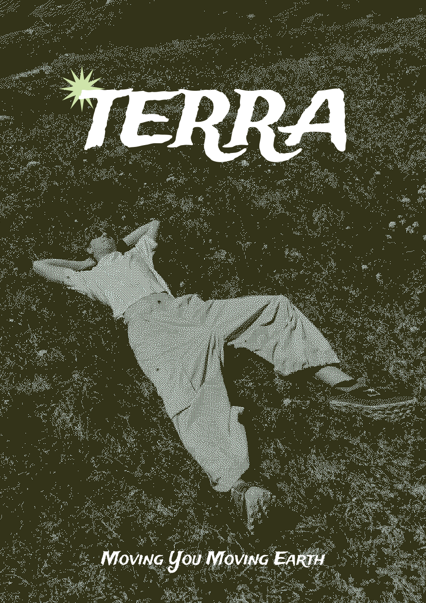

TERRA.
Passion Project: Terra
Terra or Terraform is a project I've had in mind for a while.
As an athlete and runner, I wanted to create a brand that incorporates my passion for trail
running and sustainability within the apparel and outdoor industry. Taking inspiration from
brands such as Salomon, Satisfy Running, Mount to Coast, and the New Zealand outdoor brand
Kathmandu.

// FIG 01 // INTERFACE OVERVIEW DIAGRAM